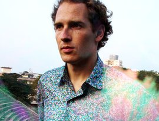
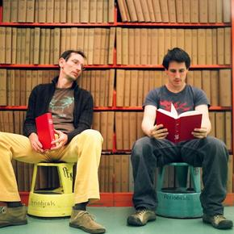

The Avalanches are an australian plunderphonics group who has seen it's members change greatly over the years. Best known for their album Since I Left You, which was praised for it's creative use of samples to create an hommage to records, The Avalanches then disappeared for nearly two decades before releasing Wildflower.

Dan Snaith is an electronic artist known for his use of avant-garde samples and psychedelic filled music. He has gone by a number of aliases including Manitoba, Caribou and Daphni. Read More

Now disbanded, The Books were an experimental plunderphonics group that sampled from obscure places and mixed it with acoustic instruments. They were active from 2000-2012. Read More